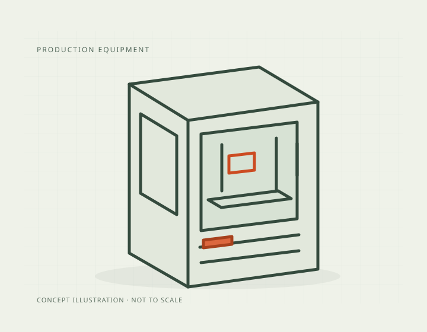

Build volume
330 x 270 x 200 mm (Aniwaa records 17.82 L)
Advertised dimensions; check usable space and variants.
Sources & dates
- Markforged X7 (Gen 2) specification page · 2026-08 · doc
Industrial continuous-fibre composite printer with laser-based in-process part inspection, the top of Markforged's X series.

330 x 270 x 200 mm (Aniwaa records 17.82 L)
Advertised dimensions; check usable space and variants.
Enclosed industrial cabinet
Published enclosure and chamber-heating notes.
Not recorded in this catalog.
Dated listing, not a live offer. Read the configuration and region.
Every recorded value stays with its conditions and original sources. Manufacturer claims and independent measurements are kept distinct.
Dimensions, construction and the hardware that moves the print.
| Property and unit | Published value and conditions | Sources and dates |
|---|---|---|
| Manufacturer & exact marketed model name (verify the exact product identity first) | Markforged X7, current generation listed as Gen 2 | 2 sources
|
| Release date (announcement and actual shipping) | Gen 2 dated 2022 | 1 source
|
| Launch MSRP (USD) | Approximately $69,900 USD (Aniwaa quotes the same figure in EUR) | 1 source
|
| Variants & sibling models — and how to tell them apart (spec-contamination risk) | Top of the X series (X3, X5, X7). Markforged's other industrial lines are different machines entirely: FX10 (CA$139,986), FX20 (CA$335,860) and Metal X Gen 2 (CA$153,986). The X7 is a composite FFF machine, not a metal printer. Pricing note: No live USD listing found. CAD Micro lists the X7 (Gen 2) at CA$90,986.00, checked Aug 2026 — Canadian dollars, not USD | 2 sources
|
| Property and unit | Published value and conditions | Sources and dates |
|---|---|---|
| Build volume X×Y×Z (mm) — advertised vs actually usable | 330 x 270 x 200 mm (Aniwaa records 17.82 L) | 1 source
|
| Machine footprint (mm) & clearance needed (cable/spool overhang) | 584 x 483 x 914 mm | 1 source
|
| Net weight (kg) | 48 kg | 1 source
|
| Enclosure: open / enclosed; panel material; door/lid | Enclosed industrial cabinet | 1 source
|
| Property and unit | Published value and conditions | Sources and dates |
|---|---|---|
| Kinematics (bedslinger i3 / CoreXY / other) | Continuous fibre deposition combined with fused filament fabrication | 1 source
|
Extrusion, heating, leveling and material handling.
| Property and unit | Published value and conditions | Sources and dates |
|---|---|---|
| Stock nozzle size & sizes included in box | Layer resolution down to 0.05 mm in Z | 1 source
|
| Property and unit | Published value and conditions | Sources and dates |
|---|---|---|
| Officially supported filament list | Composites with carbon, glass and Kevlar-reinforced polymers; elastomers (TPU); thermoplastics including PLA and PA-CF. Markforged's continuous fibre strands are carbon, fibreglass or Kevlar laid inside Onyx | 1 source
|
This guide presents the catalog’s sourced record for this exact model. Source dates belong to each reference; a page update does not mean every specification has been rechecked.
Prices are dated listing snapshots, with configuration, regional and sale conditions. They are not current offers. Unknown values remain unfilled.
Firmware, variants and available accessories can change. Read the original reference before making a purchase or planning a process.